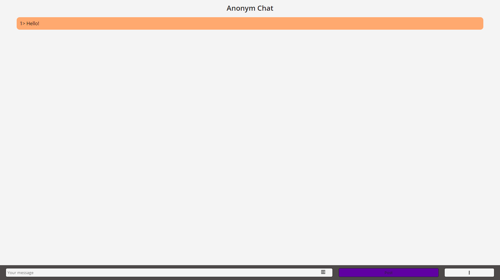
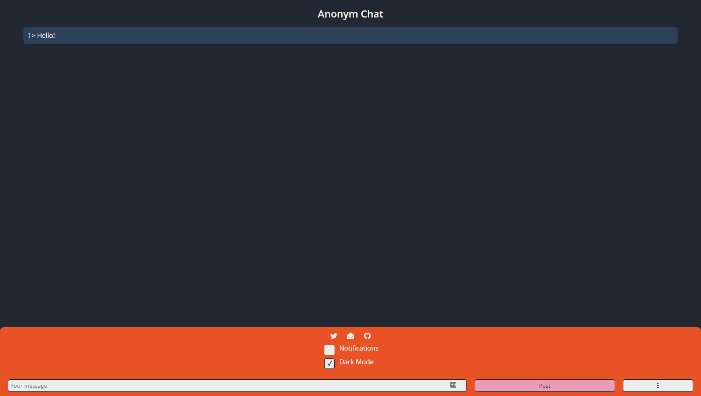
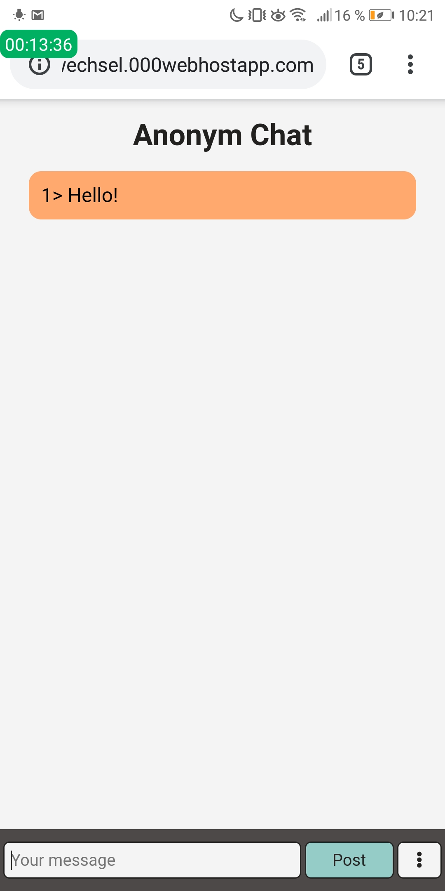
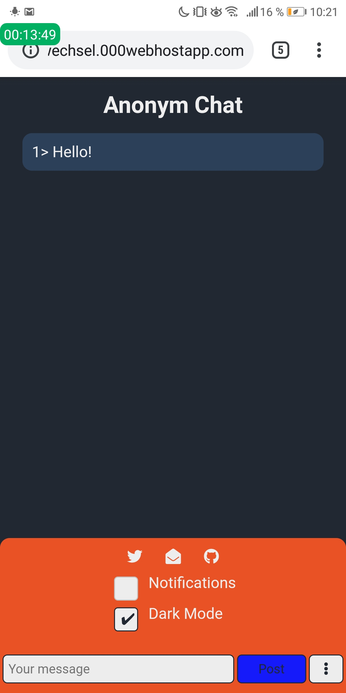

Projects
Anonym Chat
This project has it's use for communicating anonymously, without a username or other things like that. The messages are being stored in a Txt-File (Why? Because I do not know anything about Databases) with the help a PHP-Script.
In this project I wanted to try out many different topics in the Web-Development. For example, storing Cookies, or sending HTTPS-Requests with JavaScript.



